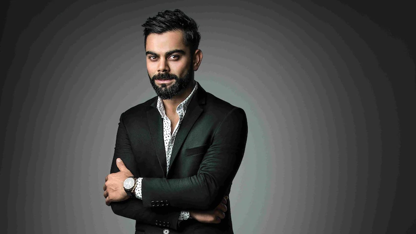

<!DOCTYPE html>
<html lang="en">
<head>
    <meta charset="UTF-8">
    <meta name="viewport" content="width=device-width,initial-scale=1.0">
    <meta http-equiv="X-UA-Compatible" content="ie=edge">
    <title>VIRAT KOHLI </title>
    <link rel="stylesheet" href="style.css">
    <link rel="stylesheet" href="https://cdn.jsdelivr.net/npm/bootstrap@4.0.0/dist/css/bootstrap.min.css" >
    </head>
    <body>


    </body>
    </html>
    
        <section id="heading">
            <div class="container">
                <div class="row">
                    <div class="col-md-6 text-center py-4">
                        
                            </div>
                            <div class="col-md-6">
                                <p class="promo-title text-center">Virat Kohli</p>
                                <p>Virat Kohli( 05 November 1988 )was an indian cricketer,known for his work predominantly in cricket forever.</p>
                                <div class="text-center">
                                <a href="#more" class="bth bth-primary">READ MORE</a>
                            </div>
                          </div>
                        </div>
                    </div>
                </section>

                <!------------------Life--------------->

                <section id="life">
                    <div class="container" id="more">
                        <h3 class="title text-center font-weight-bold">   Early life and education</h3>
                        <ul class="py-4">
                            <li>1)Virat Kohli is a well-known face of the Indian group who isn't keen on the presentation. Based on his aggressive style and unstable batting, he is demonstrating his ability everywhere in the world.</li>
                                <li>2) After this, he played in the Under-19, a significant change in his life when he joined the Indian cricket crew to win the Under-19 World Cup in Malaysia.</li>
                                    <li>3) His dad's name is Premji Kohli, and his mom's name is Saroj Kohli. He likewise has a sibling and a senior sister. He has finished his schooling at Vishal Bharti School.</li>
                        </ul>
                    </div>
                    </section>

                    <section id="life">
                        <div class="container">
                            <h3 class="title text-center font-weight-bold">   National Recognition</h3>
                            <ul class="py-4">
                                <li>1)Kohli made his Test debut in 2011.He reached the number one spot in the ICC rankings for ODI batsmen for the first time in 2013. </li>
                                    <li> He has won Man of the Tournament twice at the ICC World Twenty20 (in 2014 and 2016). He is also the leading run scorer of all time in T20 Internationals as well as T20 World Cups.</li>
                                     <li>2)In April 2007, Virat made his T20 debut and finished as the highest run-getter for his team in the Inter-State T20 Championship with 179 runs at an average of 35.80.</li>
                                         <li>3) The Rajiv Gandhi Khel Ratna award, the highest sporting honour in India, in 2018.</li>
                                
                            </ul>
                        </div>
                    </section>


                    <section id="life">
                        <div class="container">
                            <h3 class="title text-center font-weight-bold">International succeess</h3>
                            <ul class="py-4">
                                <li>1)Virat Kohli scored six double centuries as a captain in test matches. He surpassed Cricket legend Brian Lara, who had five double centuries as a test captain.</li>
                                <li>2)He became the first player to hit consecutive 3 centuries in against two opponents (West Indies & Sri Lanka).</li>
                                <li>Virat Kohli becomes the first Indian cricketer to cross 10,000 T20 runs.</li>
                                <li>4) Virat Kohli becomes the first Indian captain in history to win two Boxing Day Test matches. (AUS vs IND -Melbourne Cricket Ground; SA vs IND at Centurion 2021)</li>
                                
                            </ul>
                        </div>
                    </section>

                   
                    <section id="life">
                        <div class="container">
                            <h3 class="title text-center font-weight-bold">Personal life</h3>
                            <ul class="py-4">
                            <li>1)his parent’s name is Saroj Kohli and Prem Kohli. His father was a criminal lawyer who died on 18 December 2006. He was 54 when Kohli was playing a Ranji match. </li>
                            <li>2) Virat Kohli got married to Bollywood actress Anushka Sharma on 11 December 2017, after which she too has become a part of Kohli’s family. Kohli and Anushka were</li>
                                <li> blessed with a little beautiful daughter named Vamika Kohli</li>
                            </ul>
                        </div>
                    </section>

                
                    
                    <section id="life">
                        <div class="container">
                            <h3 class="title text-center font-weight-bold">Income</h3>
                            <ul class=""py-4">
                                <li>1) Virat gets charged around 15 lakh per test match.</li>
                                <li>2)He charges around 3 lakh for T20 Matches.</li>
                                <li>3)Kohli Charges 17 crores per IPL season.</li>
                                
                            </ul>
                        </div>
                    </section>


                    <section id="life">
                        <div class="container">
                            <h3 class="title text-center font-weight-bold">Collections</h3>
                            <ul class="py-4">
                                <li>Audi R8 LMX, Audi  A8L W12 Quattro, Toyota Fortuner, Audi Q7, Audi S6, Audi R8 V10, Range Rover, and Audi A6.</li>
                            </ul>
                        </div>
                    </section>

                            
                        
                                
                                          
                 <!------------------------Awards----------------------->
                    <section id="life">
                        <div class="container">
                            <h3 class="title text-center font-weight-bold">Awards</h3>
                            <div class="col-md-12 py-4 table-responsive">
                                <table class="table table-bordered">
                                    <thead class="thead-dark">
                                        <tr>
                                            <th scope="col">YEAR</th>
                                            <th scope="col">AWARDS</th>
                                            <th scope="col">CATEGORY</th>
                                            <th scope="col">RESULT</th>
                                        </tr>
                                    </thead>
                                 <tbody>
                                    <tr>
                                        <th scope="row">20017-2018</th>
                                        <th>Sir Garfield Sobers Trophy </th>
                                        <th>ICC Cricketer of the Year</th>
                                        <td>Won</tr>
                                    </tr>
                                    <tr>
                                        <th scope="row">2013</th>
                                        <th> Arjuna Award for cricket</th>
                                        <th>For outstanding achievements in the field of cricket on the international stage.</th>
                                        <td>Won</tr>
                                    </tr>
                                    <tr>
                                        <th scope="row">2017</th>
                                        <th>Padma Shri .</th>
                                        <th>For distinguished service</th>
                                        <td>Won</tr>
                                    </tr>
                                    <tr>
                                        <th scope="row">2013</th>
                                        <th>National Film Awards</th>
                                        <th>Best Actor</th>
                                        <td>Won</tr>
                                    </tr>
                                    <tr>
                                        <th scope="row">2018</th>
                                        <th>Major Dhyan Chand Khel Ratna Award</th>
                                        <th>spectacular and most outstanding performance in the field of sports over a period of four years” at the international level.</th>
                                        <td>Won</tr>
                                    </tr>
                                    <tr>
                                        <th scope="row">2018 </th>
                                        <th>CNN-IBN Indian of the Year</th>
                                        <th>Popular choice of India </th>
                                        <td>Won</tr>
                                    </tr>
                                 </tbody>
                                </table>
                            </div>
                        </div>
                    </section>

                    <marquee direction="left">
                         <strong> PROUD TO BE VIRAT AS INDIAN.</strong>
                    
                    </marquee>

                    <hr>

                    <footer> 
                        <p class="text-center font-weight-bold">All Rights Reserved  &copy; Make Dev</p>
                    </footer>
            </body>
    </html>